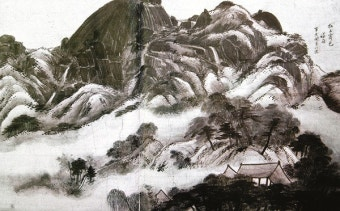
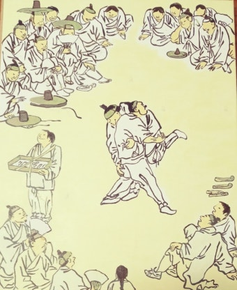
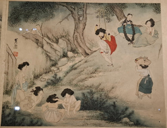
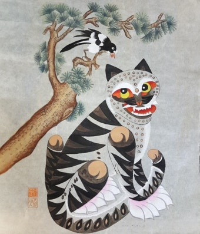

- 진경산수화 — 정선이 개척, 중국 화풍을 모방하지 않고 우리 산천을 직접 보고 그림 — 대표작 인왕제색도·금강전도
- 풍속화 — 김홍도(서민의 일상, 씨름·서당 등 역동적 구도), 신윤복(양반과 여성의 풍류, 남녀 간의 정서를 섬세하게 표현)
- 민화 — 서민들이 복을 빌며 그린 그림(까치호랑이 등), 이름이 알려지지 않은 화가들이 다수 제작
정답 포인트 김홍도와 신윤복은 둘 다 풍속화가지만, 김홍도는 서민의 노동·놀이, 신윤복은 양반·여성의 풍류를 주로 그렸다는 차이로 구분합니다.
- 한글 소설 유행 — 『홍길동전』(신분 제도 비판), 『춘향전』 등 → 서민의 의식 성장을 반영
- 판소리 — 서민들이 쉽게 접할 수 있는 공연 예술, 흥부가·춘향가 등
- 탈춤 — 양반의 위선을 풍자하는 내용이 많아 서민의 비판 의식을 드러냄
- 사설시조 — 형식에 얽매이지 않고 서민의 감정을 진솔하게 표현
56·58·65회 등에서 반복 출제 — 절기 이름과 풍속을 짝짓는 문제입니다. 음력 날짜 순서로 외우면 헷갈리지 않습니다.
| 절기 | 음력 날짜 | 풍속 |
|---|
| 정월대보름 | 1.15 | 부럼 깨기, 달맞이, 쥐불놀이, 오곡밥 |
| 삼짇날 | 3.3 | 화전 부쳐 먹기(진달래꽃), 화면(花麵) |
| 한식 | 동지 후 105일 | 찬 음식 먹기, 성묘·산소 손질 |
| 단오 | 5.5 | 수리취떡, 창포물에 머리 감기, 씨름·그네뛰기 |
| 칠석 | 7.7 | 견우·직녀 설화, 걸교(바느질 솜씨를 비는 제사) |
| 백중 | 7.15 | 백가지 과일과 채소를 갖추어 놀던 날, 머슴날 |
| 추석 | 8.15 | 송편, 강강술래, 차례와 성묘 |
| 동지 | 양력 12.22경 | 팥죽 먹기(액운을 쫓는 의미) |
정답 포인트 "창포물에 머리를 감았다" → 단오, "송편을 빚고 강강술래를 하였다" → 추석, "찬 음식을 먹으며 성묘하였다" → 한식. 그림 속 계절·음식 단서로 구분하는 문제가 많습니다.
같은 시기, 새로운 신앙도 퍼져나갑니다
서민 문화가 융성하는 한편, 기존 유교 질서로는 채워지지 않던 정신적 갈증을 두 개의 새로운 종교가 채우기 시작합니다.
- 처음에는 청에서 들여온 서학(학문)으로 소개됨 — 이후 신앙으로 받아들이는 사람들 증가
- 제사를 거부하고 평등사상을 담고 있어 유교 질서(신분제·조상 숭배)와 정면으로 충돌
- 신유박해(1801, 순조) — 이승훈·정약종 등 처형, 정약용·정약전 유배 — 황사영 백서 사건(중국 베이징의 주교에게 도움을 요청하는 편지를 쓰다 발각)으로 탄압이 더욱 강화됨
정답 포인트 천주교 박해의 핵심 이유는 제사 거부(유교 윤리와 충돌)입니다 — 신유박해와 정약용 형제의 유배를 함께 기억하세요.
- 1860년 최제우가 창시 — 유·불·선 사상에 민간 신앙을 결합
- 핵심 사상: 인내천(사람이 곧 하늘이다 — 신분 평등 지향), 후천개벽(낡은 세상이 가고 새로운 세상이 온다는 변혁 사상)
- 경전: 『동경대전』(한문)·『용담유사』(한글 가사) — 최제우가 직접 저술
- 정부는 혹세무민(세상을 어지럽히고 백성을 속인다)을 이유로 최제우를 처형 — 이후 최시형이 2대 교주로 교세 확장
정답 포인트 '인내천'과 '후천개벽'이 사료에 나오면 동학으로 바로 확정할 수 있습니다. '평등'이라는 키워드만으로는 천주교·동학 둘 다 가능하니, 다른 단서(제사 거부=천주교, 후천개벽=동학)를 함께 확인하세요.
| 구분 | 천주교 | 동학 |
|---|
| 유입/창시 | 서학으로 전래 | 1860년 최제우 창시 |
| 핵심 사상 | 평등, 제사 거부 | 인내천, 후천개벽 |
| 탄압 | 신유박해(1801) | 최제우 처형(혹세무민) |
사진을 이 페이지와 같은 폴더의 images/ 폴더에 아래 파일명 그대로 넣으시면 자동으로 채워집니다. 국가유산포털이나 e뮤지엄에서 이름으로 검색하시면 공공누리(KOGL) 라이선스 사진을 받으실 수 있습니다.

images/inwangjesaekdo.jpg
인왕제색도정선 · 진경산수화 대표작

images/ssireum-kimhongdo.jpg
씨름(김홍도)서민의 일상을 담은 풍속화

images/danopungjeong-sinyunbok.jpg
단오풍정(신윤복)양반·여성의 풍류를 담은 풍속화

images/minhwa-kkachi-horangi.jpg
까치와 호랑이(민화)서민들이 복을 빌며 그린 그림